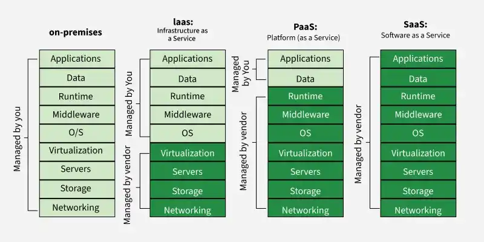

The stack: on-premises vs IaaS vs PaaS vs SaaS
Managed by youManaged by vendor
Show the original reference diagram

Pick a model
The exact split of responsibilities depends on the specific service and how you configure it. With AWS, the shared responsibility model applies: AWS secures the cloud itself, and you stay responsible for your data, access and configuration, including in SaaS.